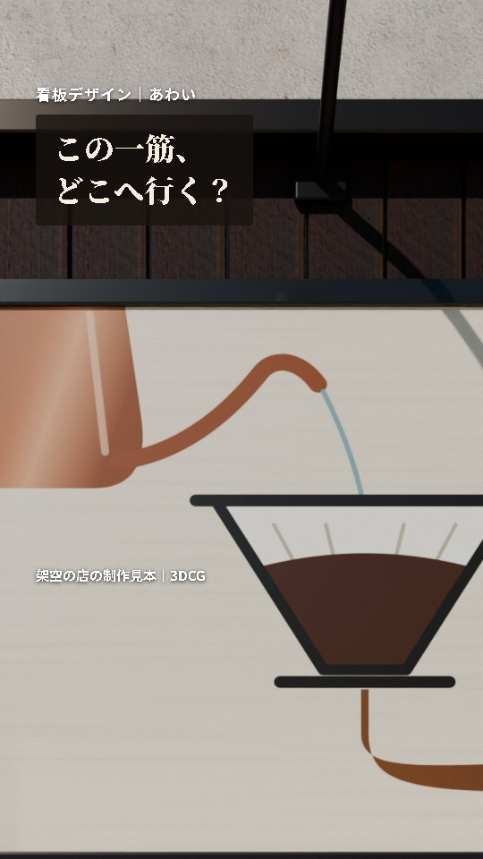
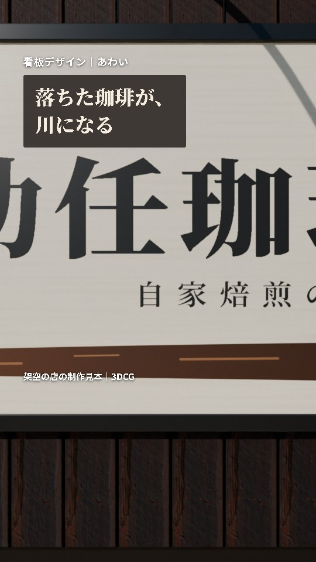
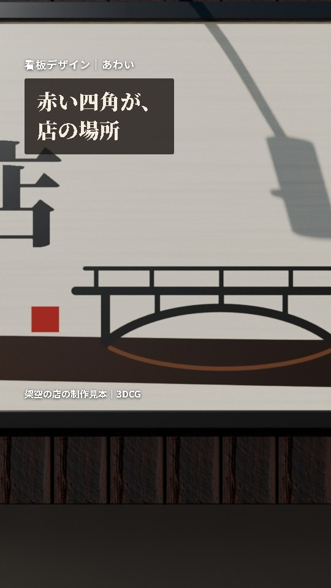
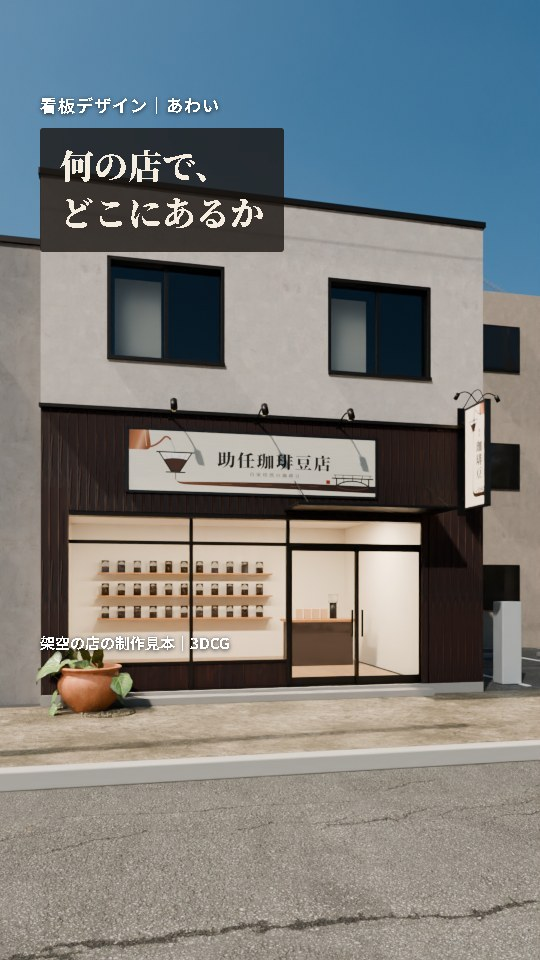
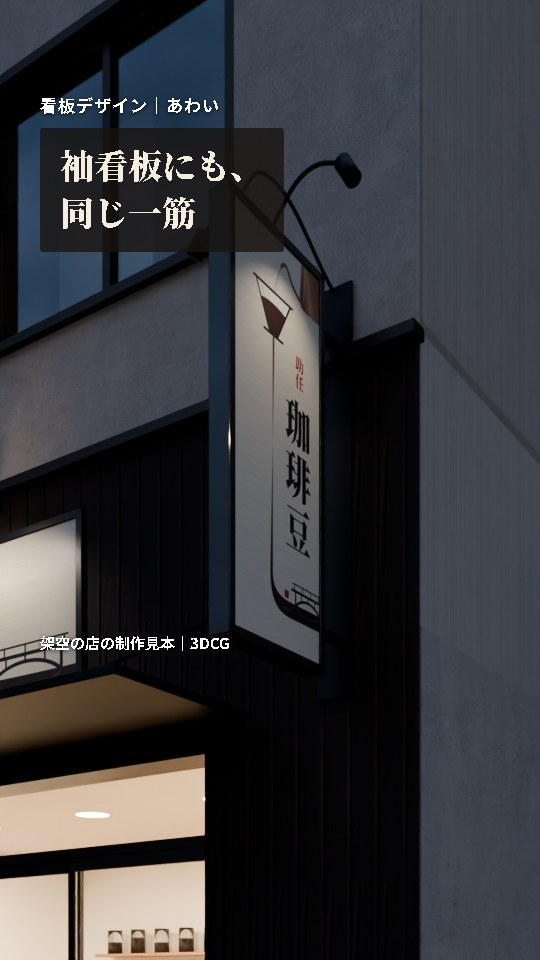
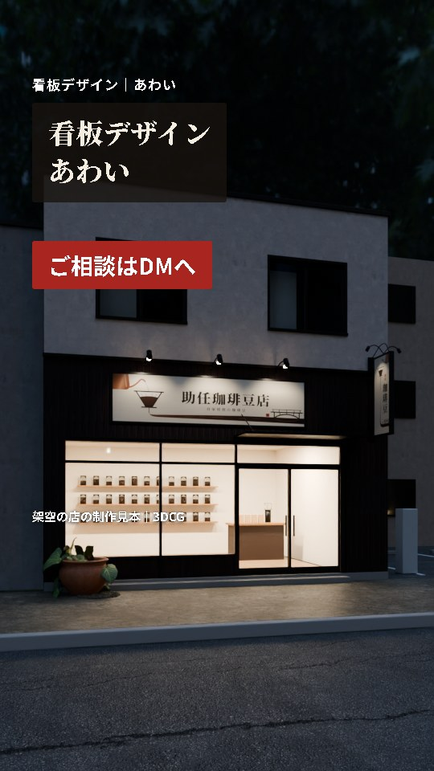

助任珈琲豆店の看板広告 絵コンテ（縦の動画・約25秒）
この絵コンテと声の言葉で良ければ、本番の動画を作ります。画像は本番と同じ3DCGの店から切り出した静止画で、本番ではカメラが動きます。
何を伝える広告か
- 見てほしい人：個人で珈琲店や小さな店をしている店主
- 伝えること：看板の絵ひとつで、何の店か、どこにある店かまで伝えられる
- 思ってほしいこと：「うちの看板も、こういう話のある絵にできるんだ」
- 見続ける理由：冒頭の「この一筋、どこへ行く？」の答えが、川・橋・赤い四角と進んで10秒ごろに出る
- 前の匠塗の広告との違い：匠塗は4つの形の看板を並べた。今回は1枚の絵の中を、カメラが一筋に沿って旅する
場面

1 0.0秒ごろ〜
声：「珈琲豆の店の看板を作りました。描き始めは、お湯の一筋から。」
画面の字：この一筋、どこへ行く？
動き：ケトルの注ぎ口から始まり、湯の一筋を追ってゆっくり下へ。

2 4.5秒ごろ〜
声：「ドリッパーを抜けた珈琲は、そのまま川になります。店のそばを流れる、助任川です。」
画面の字：落ちた珈琲が、川になる
動き：ドリッパーの下から、川に沿って右へ横に流れる。

3 10.0秒ごろ〜
声：「橋のたもとの赤い四角が、店の場所。」
画面の字：赤い四角が、店の場所
動き：橋の手前で止まり、赤い四角が画面の中心に来る。

4 13.0秒ごろ〜
声：「何の店で、どこにあるのか。看板の絵ひとつで伝わります。」
画面の字：何の店で、どこにあるか
動き：赤い四角から一続きで後ろへ下がり、通りに建つ店の全体へ。

5 17.5秒ごろ〜
声：「通りに出す袖看板にも、同じ一筋を通しました。」
画面の字：袖看板にも、同じ一筋
動き：夕方。看板灯の点いた袖看板を、右の歩道から少し回り込んで。

6 21.0秒ごろ〜
声：「看板のデザインは、あわいへ。ご相談はDMで。」
画面の字：看板デザインあわい／ご相談はDMへ
動き：夕方の店の全体。止めて案内を出す。
声は匠塗の広告と同じ合成音声（Keita）で、BGMと効果音は入れません。字の下の小さな注記「架空の店の制作見本｜3DCG」は最後まで出します。